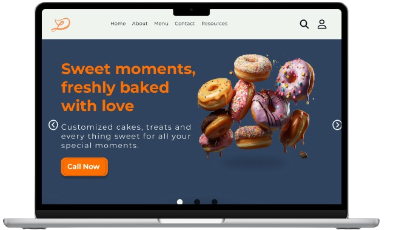
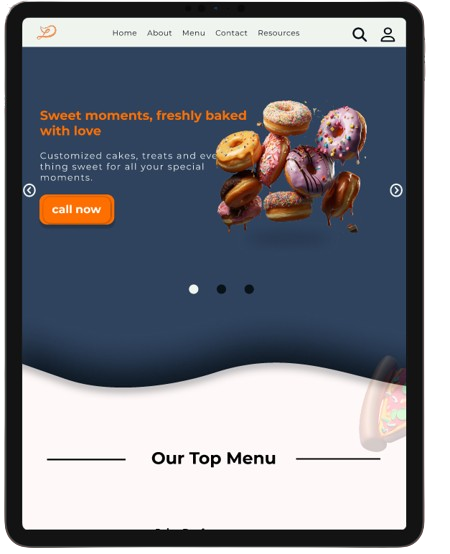
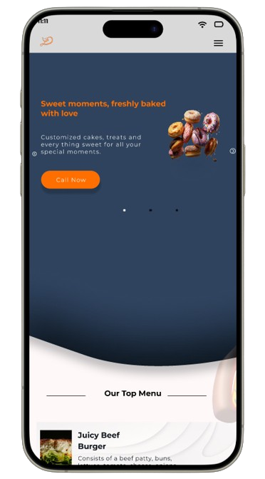

Overview
Nim Dorji Restaurant:App and Responsive Website
Project description
UX Case Study
Duration: 7th Aug - 30th Oct
Product Overview
Nim Dorji Restaurant offers a cutting-edge app and responsive website that revolutionizes the online dining experience by providing immersive 3D visualizations of dishes. Targeting tech-savvy diners and food enthusiasts, it ensures an engaging and informative meal selection process.
Problem
The current state of e-commerce websites lacks an interactive experience for customers, making it difficult to fully appreciate products through static 2D images.
Goal
Enhance the online dining experience by providing immersive and interactive 3D visualizations of dishes thropugh mobile app and responsive website.


